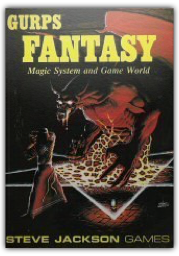
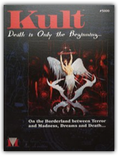
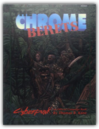

Signing For Dummies, with Video CD
Adan R. Penilla II, Angela Lee Taylor
Signing For Dummies, with Video CD
Adan R. Penilla II, Angela Lee Taylor

The fast and easy way to grasp this evolving and growing language

Gurps Fantasy: Magic System and Game World
Steve Jackson
"In the 96 pages of GURPS Fantasy, you'll find: ? Official magic rules for the GURPS system, with many different ways to cast spells. Work alone, or gather a circle of powerful mages, for arcane rituals that bend nature to your will... ? Yrth, a world background blending the empires and faiths of medieval Europe with the wonders of magic... where the power of sorcery rules the fate of nations! ? New advantages, disadvantages, and skills. ? An extensive, well-explained list of spells - hundreds of them. ? Advice on character creation, and how to roleplay nonhuman races, including Elves, Dragons, Vampires, and more! ? Detailed rules for designing and creating individual magic items. ? Complete Table of Contents, Index, and pull-out Table of Spells for easy reference."  GURPS Basic Set
Steve Jackson
GURPS Basic Set
Steve Jackson
GURPS, the Generic Universal Role System, is the most flexible roleplaying system you can use. With just this basic set, you can adventure in any world you can imagine. Rules are included for all types of weapons from clubs to lasers... For wizards and magic, with more than 100 spells... for psionic powers.  Fiendish Codex I: Hordes of the Abyss
James Jacob, Erik Mona
Fiendish Codex I: Hordes of the Abyss
James Jacob, Erik Mona
Raw Chaos and Pure Evil  Pathfinder Adventure Path: Rise of the Runelords Anniversary Edition
James Jacobs
Pathfinder Adventure Path: Rise of the Runelords Anniversary Edition
James Jacobs
The original Pathfinder Adventure Path returns in this complete hardcover edition celebrating five years of Pathfinder and 10 years of Paizo Publishing! Expanded and updated to the current Pathfinder RPG rules, this unprecedented collection brings together six classic Pathfinder adventures to create an entire campaign!The Rise of the Runelords Adventure Path begins with a goblin attack and takes players on an epic journey through the land of Varisia as they track a cult of serial killers, fight depraved backwoods ogres, stop an advancing army of stone giants, delve deep into ancient dungeons to reclaim weapons of unbelievable power, and finally go up against an all-powerful wizard-king in his ancient mountaintop city. In more than 400 action-packed pages, this special anniversary edition expands the original campaign with new encounters throughout, incorporating five years of community feedback. New monsters, detailed locations, and tons of new art make the Rise of the Runelords Adventure Path the most beautiful and elaborate campaign ever published for the Pathfinder Roleplaying Game!  Secret Of The Slavers Stockade - Dungeon Module A2
Harold Johnson
Secret Of The Slavers Stockade - Dungeon Module A2
Harold Johnson
A2 The Secret of the Slavers Stockade Advanced Dungeons & Dragons Adventure Module 9040, 1981. "The battle against the slavers continues! You and your fellow adventurers have defeated the slavers at Highport, but you have learned of the existence of another slaver stronghold, and you have decided to continue the attack. But beware! Only the most fearless of adventurers could challenge slavers on their own ground, and live to tell of it! This modules was originally used for the official ADVANCED DUNGEONS & DRAGONS Tournament at GenCon XIII and is the second of four in a series of related tournament modules from TSR Hobbies, Inc. This module contains a challenging scenario, the tournament scoring system plus nine pre-rolled, playtested tournament characters. Also included are large scale referee's maps, notes, and background information. A2 is a complete adventure in itself, but it is also a companion to A1 (Slave Pits of the Undercity), A3 (Assault on the Aerie of the Slave Lords) and A4 (In the Dungeons of the Slave Lords). Be sure to look for other exciting adventure modules from the Game Wizards at TSR." Contibutors; Harold Johnson and Tom Moldvay.
Thwarting Enemies at Home and Abroad: How to Be a Counterintelligence Officer
William R. Johnson
A Classic in Counterintelligence―Now Back in Print  Opponents Unlimited: A Villains & Vigilantes Playing Aid
Stalwart Stefan Jones
Opponents Unlimited: A Villains & Vigilantes Playing Aid
Stalwart Stefan Jones
"Included are over two dozen NPCs, with casual encounter ideas and four complete evil organizations!" FGU 2007

Kult: Death is Only the Beginning...On the Borderland between Terror and Madness, Dreams and Death...
Gunilla Jonsson, Michael Petersen
Kult is a contemporary horror role-playing game which explores the dark side of the human soul. Reality is not what we think. Around us the world is dark and dangerous and nothing is what it seems to be. Our reality is an illusion, created to keep us captive. We are imprisoned since ages past by a dictatorial creator. The true world, invisible to us, is ruled by creatures who dominate behind the false facades, our prison wardens and torturers. The characters in 'Kult' are dark heroes, governed by Destiny. When the illusions shatter, they face the true reality.

The Chrome Berets: An Official Cyberpunk 2020 Campaign Book
Thomas R. Kane
This campaign book is an exciting new approach to CYBERPUNK 2020 adventures by Atlas Games. The format encompasses a tough, no-holds-barred scenario that will challenge any player group's roleplaying and tactical skills; plus a wealth of valuable new game material that may be applied to any Cyberpunk campaign.  Dark Folk
Paul Karczag, Steve Morrison, Robert Lynn Asprin
Dark Folk
Paul Karczag, Steve Morrison, Robert Lynn Asprin
Meet the dark races, the foul races, the evil races; the Orcs, Kobolds, Goblins, Gnolls and Trolls. Learn how they live, hate, and terrorize. Each dark race is described in detail with complete towns, villages, fortresses, dungeons and featuring Orcish Culture a special article written by Robert Lynn Aspirin. Also included are adventures involving each of the dark folk that are suitabe for use with all popular role playing systems including Advanced Dungeons and Dragons. Bring depth to the villains in your world.  The Walking Dead: Compendium One
Robert Kirkman
The Walking Dead: Compendium One
Robert Kirkman
Introducing the first eight volumes of the fan-favorite, New York Times Best Seller series collected into one massive paperback collection! Collects The Walking Dead #1-48. This is the perfect collection for any fan of the Emmy Award-winning television series on AMC: over one thousand pages chronicling the beginning of Robert Kirkman's Eisner Award-winning continuing story of survival horror- from Rick Grimes' waking up alone in a hospital, to him and his family seeking solace on Hershel's farm, and the controversial introduction of Woodbury despot: The Governor. In a world ruled by the dead, we are finally forced to finally start living. |
 Made with Delicious Library
Made with Delicious Library